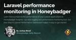
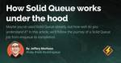

Honeybadger Developer Blog
https://www.honeybadger.io/blog/
Tutorials, product info and good advice from the Honeybadger crew.
フィード
A friendly introduction to PHP testing
Honeybadger Developer Blog
Unit, integration, acceptance, TDD, BDD, oh-em-gee! How should you implement PHP testing, and when? Jump into this article to learn the different testing tools and methodologies available in PHP and how to use them.
2日前
Building Livewire Components with Volt
Honeybadger Developer Blog
Learn how to use Volt to build Vue-like, single-file Livewire components for your Laravel projects.
4日前

Laravel performance monitoring in Honeybadger
Honeybadger Developer Blog
Learn how to improve the performance of your Laravel applications in Honeybadger Insights—our new logging and performance monitoring tool. Our new drop-in Laravel Performance Dashboard makes it easy to get started.
8日前
The ultimate guide to Node JS testing
Honeybadger Developer Blog
You know that you should write tests, but what kind? Dig into this article to learn all about Node JS testing, including the various types of tests. We'll compare the two most popular testing frameworks and walk through examples of each test type.
9日前

How Solid Queue works under the hood
Honeybadger Developer Blog
Maybe you've used Solid Queue already, but how well do you understand it? In this article, we'll follow the journey of a Solid Queue job from enqueue to completion.
11日前

A practical guide to web scraping with Ruby
Honeybadger Developer Blog
Web scraping with Ruby opens up a world of possibilities. Would you like to get a text message when something gets restocked online? Dig into this article, where we'll solve a practical shopping problem in Ruby with web scraping!
18日前
How to use the Reddit API for a JavaScript application
Honeybadger Developer Blog
You've probably used Reddit in the browser, but did you know the API can power your apps with Reddit data? Jump in to learn how to use the Reddit API to display search results in a simple JavaScript web application built with Parcel.
23日前
Building Ruby on Rails engines
Honeybadger Developer Blog
Jump into this article to learn the differences between Rails engines and plugins and even create your very own engine. We'll cover everything you need to know to enhance your Rails applications with modular, reusable components.
25日前
Exception Handling in JavaScript
Honeybadger Developer Blog
If you work with JavaScript, you know that errors are unavoidable. How you handle them determines whether they work for or against you. Dive into this article to master best practices for exception handling in JavaScript.
1ヶ月前
Practical strategies for Laravel performance optimization
Honeybadger Developer Blog
Optimizing your Laravel application is key to delivering an exceptional user experience. From faster response times to reduced server load, learn how to unlock the full potential of Laravel and take your application to the next level.
1ヶ月前
A guide to Laravel pipelines
Honeybadger Developer Blog
Laravel pipelines are a great way of breaking down complex workflows into smaller, manageable, and testable chunks. Learn about how Laravel uses them internally in the framework, and how to create your own.
1ヶ月前